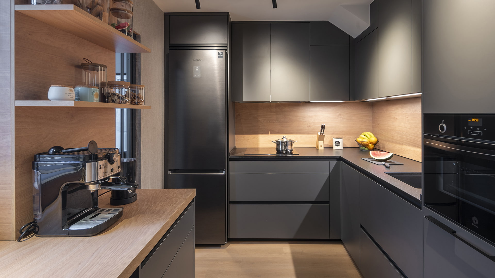

Tortilla de Patatas

El plato rey de la gastronomía española, con la cebolla muy pochadita.
Leer receta completa
Para mí, el secreto de un buen guiso no es el tiempo, sino hacerlo con mucho cariño y paciencia.
Si quieres aprender técnicas profesionales antes de empezar, te recomiendo visitar la web de MasterChef.
Mucha gente piensa que cocinar es difícil, pero yo siempre digo que si sabes seguir unas instrucciones básicas y pruebas la comida mientras cocinas, es imposible fallar.
El plato rey de la gastronomía española, con la cebolla muy pochadita.
Leer receta completa